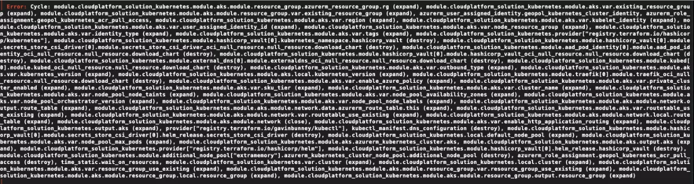

We all know, Terraform is the current de-facto standard when it comes to describe your infrastructure.
We might also have experienced some limitation in flexibility when we used Terraform (mostly the versions < 1.0) for which we had to implement quite often some hackish workaround: thinking about conditional logic, “for-each’s” when there was no foreach support, etc…
Luckily most of these can masked via modules, a quite flexible representation of logical group of resources.
Now, I see there are very interesting and fascinating alternatives to Terraform, that solve most of the un-flexibility we encountered while describing our infrastructure (read Pulumi) but we can discuss another time about this topic.
The idea behind this post is to share some thoughts on the way Terraform is used, and the way I personally think it should be used instead.
TL;DR Terraform is not your silver-bullet for infrastructure. Actually is just a language to describe the infrastructure, not to orchestrate the creation of it, even if it pushes you to think is a good idea to use it also for orchestration._
Thanks to the flexibility given by modules, Terraform can compose quite complex infrastructure representations.
But after a while, you may figure out that big infrastructure representation started looking like a big monolith. Are you sure your infrastructure is actually a big monolith?
Are you perhaps trying to use a single root module because it looks convenient to drive everything with Terraform, and you can easily (really?) keeps all the relationships between all the resources in a single root module?
I’m quite sure at some point you will have a single root module that starts creating that complex infrastructure, then it also (because why not, it’s easy to plug it in there) deploys your application, maybe with Helm if you run Kubernetes.
And, not least, when it comes to the normal “everyday fuck-ups” like a circular dependency introduced by mistake you might need to figure out your acyclic graph composed by hundreds of resources… good luck with that. 
Lets thing a moment about the first question above:
Are you sure your infrastructure is actually a big monolith?
Since before we mentioned Helm, let’s assume our project is an application that runs on top of Kubernetes.
If you think about it your infrastructure is composed by group of resource that can be categorized and identified by their own lifecycle:
All these above might have a different lifecycle. Now we don’t want to create a granularity hell, but in general we can approach this separation with an abstraction like: identities, base-infra, cluster-baseline, application.
At the end of the day, if you want to go for continuous delivery, it might be that you will deploy multiple times per day only the application layer, whereas the rest is deployed with different pace or barely changes at all.
You can also think about this separation by imagining different teams offering different layers as their deliverable.
I like to imagine the above abstractions as layers, and my personal idea is that they should be implemented with IaC in Terraform, but not deployed in a single root module.
This is the very moment where the convenience of Terraform stops, and we need to use something else.
When you start splitting your infrastructure with the layered approach you can immediately see some benefit:
variables.tf
files.Now it comes the interesting part.
With this separation in mind I can’t really split things in terraform. I mean, you can use different root modules for each of these layers, but we need to find another way to orchestrate the deployment of all these stacks.
In addition, these stacks might depend on each other. So the strategy is that each subsequent stack read what he needs from the information exported from the previous stack(s).
We can achieve this in different way depending on the orchestration technology.
Most common case is that the next layer receives the minimal necessary requirement from the orchestrator, so that it can proceed with the deployment: just to make an example with the application layer: it will require only the coordinate of the Kubernetes cluster, and then it can proceed by instantiating the required provider and targeting the cluster.
The orchestrator, once the cluster is deployed, can retrieve the information from the remote state and pass them to the next layer.
When it comes to the orchestration technologies here some examples I’ve used:
Terragrunt at the moment looks the most interesting technology to drive the orchestration. It supports several helper functions to help you make the dependencies explicit, and you can easily test the deployment orchestration from your laptop.
You can also describe the orchestration with pipelines or workflows, such as GitHub actions. In this case, there is
the
pitfall of creating too complex actions that tie you to the specific technology for the runners.
For example, if you start creating complex orchestrations with GitHub actions then you will not be able to easily test
them in your local development (workstation). Some project might help you like ACT, but
most of the time it’s just faster to push the branch and let the runners deploy and test your changes.
Taskfile is another technology, more agnostic and portable, tha is supposed to be the new replacement for the glorified Makefiles. It’s a Golang project (single binary) that offers incredible flexibility and rich features to drive your orchestration.
I personally see Terragrunt as the most featured way to orchestrate Terraform stack but, on the other side, I dislike a bit the way it creates complex interpolations. It might become difficult to maintain on the long run.
The other approach I see quite interesting, is to describe the orchestration with Taskfile, so that you can create the tasks and be able to use them locally or on the runners.
In the next article, I will showcase an example repository that follows the layered infrastructure pattern, just to try to explain more clearly how I think a good use of layers should be like.